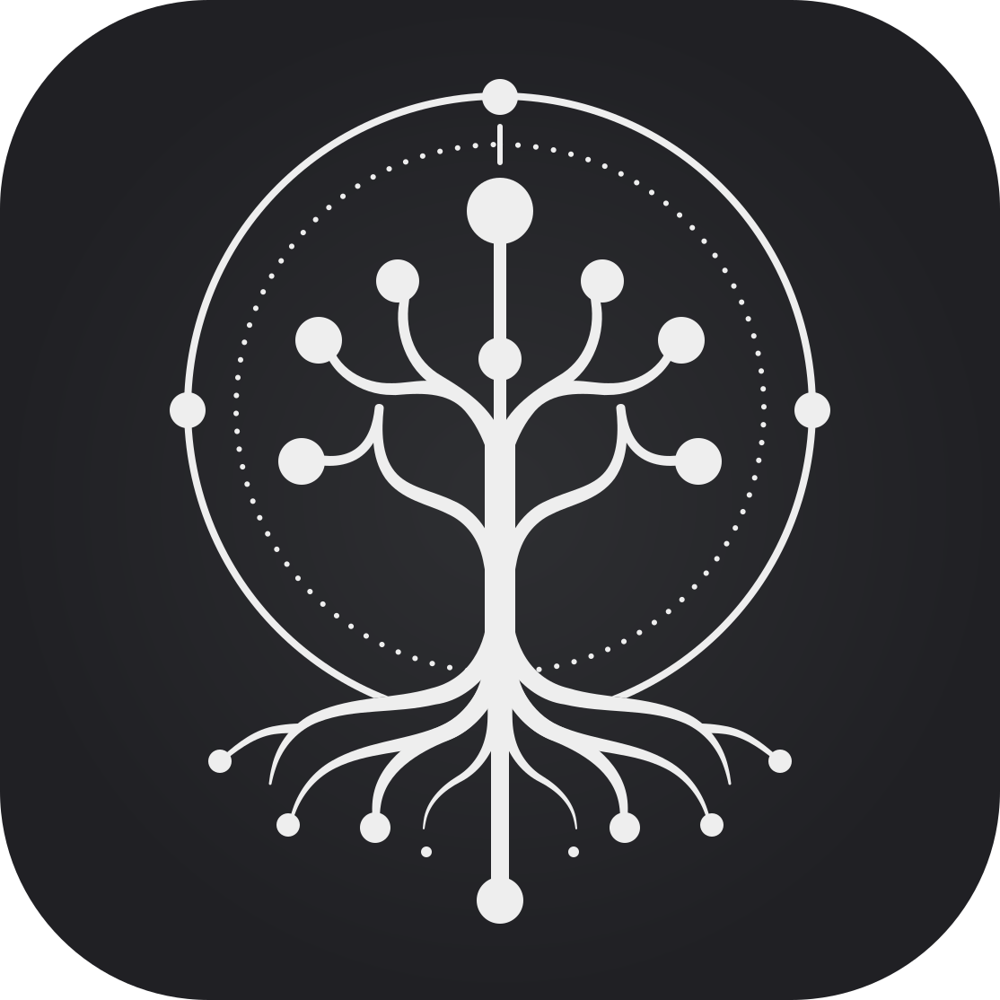

디자인 시스템과 워드프레스: 결합의 다섯 가지 방법
5 minute read
Category-aware reference for WordPress core block surfaces styled by blocks.css. The catalog follows the Block Inserter categories Text, Media, Design, Widgets, and Theme; Embeds remain excluded pending source and privacy policy.
기본 출력은 prose.css의 typography를 따릅니다. .has-drop-cap 변형만 blocks.css가 추가합니다.
처음 글자가 큰 드롭캡으로 표시됩니다. 본문은 자연스럽게 흘러갑니다. WordPress block editor에서 paragraph block의 "Drop cap" 옵션을 켜면 자동으로 has-drop-cap 클래스가 추가됩니다. 한글 첫 글자도 드롭캡 처리되며 brand typeface로 강조됩니다.
왼쪽 정렬 (기본).
중앙 정렬.
오른쪽 정렬.
core/heading is already covered by v3.6.2 Tier 1 snapshots and by base.css semantic heading mapping. It does not require a blocks.css selector.
Lead paragraph directly under an H1 heading.
Section paragraph directly under an H2 heading.
Subsection paragraph directly under an H3 heading.
Quote는 prose.css의 primary-bordered blockquote을 그대로 사용. Pullquote는 blocks.css가 정의한 별도 스타일 — headline-medium serif italic, top/bottom dividers.
코드는 한 번 쓰이고 여러 번 읽힙니다. 그래서 코드를 읽기 좋게 만드는 일이 가독성 있는 글을 쓰는 일보다 더 중요합니다.
Guido van Rossum
"디자인은 어떻게 보이느냐가 아니라 어떻게 작동하느냐다."
Steve Jobsfunction greet(name) {
return `안녕하세요, ${name}!`;
}
console.log(greet('World')); 공백과
들여쓰기가
그대로
유지됩니다.
진달래꽃 김소월 나 보기가 역겨워 가실 때에는 말없이 고이 보내드리오리다
기본 ul/ol는 base.css + prose.css가 처리. is-style-list-segmented는 blocks.css의 Axismundi block style — surface-container 셀이 2px 간격으로 쌓이는 segmented 변형.
- [x])
core/table은 <figure class="wp-block-table"> 안에 <table>이 들어있는 형태로 출력됩니다. blocks.css가 figure를 wrapper로 활용 (border, radius, overflow-x).
WP core 기본 렌더링. 전체 셀 격자 테두리. thead / tbody / tfoot 모두 지원.
| 이름 | 역할 | 가입일 |
|---|---|---|
| 김민수 | 관리자 | 2024-01-15 |
| 이서연 | 편집자 | 2024-03-22 |
| 박지훈 | 작성자 | 2024-05-08 |
| 합계 | 3명 | |
is-style-row-separators)수직 경계선 제거 — 수평 row 구분선만 남김. 데이터 밀도가 높거나 열 수가 많아 수직선이 시각적 노이즈가 될 때 사용.
| 이름 | 역할 | 가입일 |
|---|---|---|
| 김민수 | 관리자 | 2024-01-15 |
| 이서연 | 편집자 | 2024-03-22 |
| 박지훈 | 작성자 | 2024-05-08 |
| 합계 | 3명 | |
is-style-stripes)| 제품 | 가격 |
|---|---|
| Basic | $9/mo |
| Pro | $29/mo |
| Enterprise | Contact |
| 총 플랜 수 | 3 |
셀에 white-space: nowrap이 있으면 table이 figure 밖으로 overflow됩니다. 스크롤 격리는 <div class="wp-table-scroll"> wrapper가 필요하며, WP core/table 블록에서는 render_block 필터로 주입해야 합니다. 현재 catalog는 PHP 미적용 상태 — overflow 동작을 그대로 노출합니다.
| ID | 이름 (Full Name) | 이메일 주소 | 역할 / 권한 | 가입일자 | 마지막 로그인 시각 | 현재 상태 | 접속 IP |
|---|---|---|---|---|---|---|---|
| 00001 | 김민수 (Minsu Kim) | minsu.kim@example.com | Administrator | 2024-01-15 09:30 | 2 hours ago | ● Active | 203.0.113.42 |
| 00002 | 이서연 (Seoyeon Lee) | seoyeon.lee@example.com | Editor | 2024-03-22 14:18 | 1 day ago | ● Active | 198.51.100.7 |
is-style-wrap)Opt OUT of horizontal scroll. Cells wrap to multiple lines. Use when table content is text-heavy (descriptions, notes).
| 토큰 | 설명 (긴 텍스트) |
|---|---|
--space-md |
component padding 기본값. 16px. 한글 본문이나 영문 설명이 길게 들어가도 셀 안에서 자연스럽게 줄바꿈되어 표시됩니다. |
--space-lg |
section 내부 단락 간 spacing. 24px. word-break: keep-all 로 한글은 단어 단위 줄바꿈, 긴 영단어는 overflow-wrap: anywhere로 강제 break. |
core/table에서 caption 입력 시 <figure> 내부 <table> 다음 형제로 <figcaption> 출력. 테이블의 border/radius는 <table>이 소유하므로 caption은 테두리 밖에 놓입니다.
| 제품 | 가격 |
|---|---|
| Basic | $9/mo |
| Pro | $29/mo |
| Enterprise | Contact |
core/details (WP 6.4+) — <details class="wp-block-details"><summary>...</summary>[inner blocks]</details>. 내부에 임의의 블록을 중첩할 수 있는 토글 컨테이너. Axismundi CSS 없음 — 브라우저 기본 disclosure 위젯 그대로 사용.
alt 텍스트를 제공하세요.open attribute)디자인 토큰은 색상, 타이포그래피, 간격 같은 시각적 결정을 플랫폼 독립적인 값으로 저장한 단위입니다. --md-sys-color-primary처럼 CSS custom property로 노출되며, 테마 전환 시 단일 지점에서 변경됩니다.
core/footnotes (WP 6.3+) — 포스트 말미에 <ol class="wp-block-footnotes">로 렌더링. 인라인 각주 링크는 편집기가 자동 생성. prose.css ol 룰로 커버되며 별도 Axismundi CSS 없음.
Query Loop / Single post template 전용 블록. 일반 포스트 content 편집기에서 삽입 불가. blocks.css §6.x가 visual contract 담당.
기본 출력. Taxonomy term을 chip row로. __separator는 hidden, gap이 spacing 담당.
WP prefix attribute. Term group 앞에 "Categories: " 등 라벨이 prepend. Theme은 라벨에 label-medium tone 적용.
추정 읽기 시간 텍스트. ::before로 schedule Material Symbol 주입 — theme chrome 스코프.
5 minute read
Title 하위의 metadata row. Date · Time-to-Read · Terms 조합. WP는 각 블록을 개별로 emit하므로 row 컴포지션은 theme의 책임.
5 minute read
Long-form 본문 끝에 놓이는 tag row 패턴. 본문과 distinct하게 surface-container 위에 chip.
These rows make unsupported Text blocks explicit without reopening v3.6.2 Tier 1 or claiming implementation.
v3.6.24 keeps Media specimens bounded to image-derived surfaces. Audio, file, and icon remain explicit gap rows. Video specimen is promoted with text track structure.
Axismundi 기본 이미지 스타일. border-radius: corner-medium. WP core의 rounded style과 source-order 충돌이 생기지 않도록 is-style-rounded는 blocks.css에서 명시적으로 재선언.
is-style-rounded)WP core 등록 스타일. border-radius: corner-full (9999px) — 정사각형 이미지에서 원형으로 처리. blocks.css에서 명시적 재선언으로 source-order 충돌 방어.
WP 6.9+ media block. SVG source는 block content가 소유하고, Axismundi는 currentColor 상속과 geometry만 계약.
Icon block inherits text color and uses SVG fill: currentColor.
브라우저 native controls 사용. Axismundi는 geometric frame만 계약 (border-radius: corner-medium, margin-block). <track kind="captions">은 structural HTML — CC 버튼은 브라우저 UI.
core/media-text
Uses existing image placeholder and text composition. No new CSS contract is created in v3.6.24.
axismundi_pilot_get_audio_cover_attachment_id() PHP 훅 준비 완료 → future visual contract.render_block_core/file 필터 + JS 토글 필요. 레이아웃 참조: WordPress Photo Directory. Phase 4에서 구현.
.alignleft, .alignright, .aligncenter for inline-flow alignment. .alignwide, .alignfull for content-width breakouts. Both wide/full require a bounded parent — the demo container below sets max-inline-size to ensure correct behavior.
왼쪽 정렬 이미지 옆으로 본문이 흘러갑니다. .alignleft는 float: left와 margin-inline-end: var(--space-md)를 적용합니다. RTL 환경에서는 logical property가 자동으로 반대편으로 띄웁니다. 영문 sample text follows the floated image to demonstrate the wrap behavior across mixed scripts.
중앙 정렬된 figure 또는 image.
기본 콘텐츠 폭의 본문.
.alignwide는 부모의 max-inline-size를 해제합니다. 이 demo 컨테이너 자체가 720px이라 그 안에서만 늘어납니다.
Default (25% width)
Wide (100%)
Dots (centered ···)
Divider inset (Axismundi block style)
Divider middle-inset
core/group + 3 card style variants — is-style-card-filled, is-style-card-elevated, is-style-card-outlined. core/columns는 600px 이하에서 자동 stack (is-not-stacked-on-mobile 옵션으로 비활성).
새로운 메시지가 도착했습니다.
elevated card는 약간의 그림자로 surface 위로 떠 보입니다.
outlined card는 1px outline-variant 테두리만 있습니다.
왼쪽 컬럼.
중간 컬럼.
오른쪽 컬럼.
core/accordion (WP 6.9+) — coordinated disclosure list. Unlike core/details, an Accordion contains multiple core/accordion-item children and can auto-close siblings. WP Interactivity API owns behavior; blocks.css owns neutral M3 surfaces.
주문 후 2-3영업일 안에 발송됩니다. 지역과 재고 상태에 따라 일정이 달라질 수 있습니다.
수령 후 7일 이내 미사용 상품만 반품할 수 있습니다.
WP attribute iconPosition:left은 toggle 안에서 icon과 title의 순서를 바꿉니다. Theme CSS는 gap과 색상만 제공.
Heading은 button 역할을 하며, panel은 aria-labelledby로 연결됩니다.
Layout blocks are chrome-free composition surfaces. WP layout support owns display mode, alignment, and author controls; Axismundi normalizes gap tokens only.
core/row)Alpha
Beta
Gamma
core/stack)Step one
Step two
Step three
core/grid)One
Two
Three
Four
core/button + is-style-{fill|tonal|elevated|outline|text}. WordPress core의 fill/outline 기본 스타일을 M3 Filled/Outlined로 매핑하고, 나머지 3개 스타일만 theme이 등록합니다.
M3 Filled / Tonal / Elevated / Outlined / Text. is-style-{fill|tonal|elevated|outline|text}. WP core는 fill/outline만 등록하고 theme이 나머지 3개를 추가.
Editor에서 inline SVG를 link 안에 직접 삽입. Theme은 icon sizing (1em)과 gap만 계약 — icon 선택은 author 결정.
WP는 anchor에 aria-disabled="true"를 부여. Theme은 0.38 opacity + cursor: not-allowed로 시각적 비활성화. 모든 5가지 variant에 동일 패턴.
Static state classes mirror component behavior for visual QA. Real hover / active / focus still work through native pseudo-classes.
core/button is link markup, so this is a static visual contract for selected states. Interactive toggles should use the component button layer.
WP width attribute로 link가 25/50/75/100% 폭으로 확장. Container/checkout/사용 시 흔한 패턴.
Long-form 본문 끝의 단일 CTA 패턴. 주요 액션은 Filled + leading icon, secondary는 Text.
이 가이드의 패턴을 직접 적용해 보고 싶다면, 2일짜리 실습 워크숍에서 같이 만들어 봅니다. 다음 회차는 6월 15–16일 부산.
These WordPress design blocks are acknowledged as upstream catalog entries, but v3.6.24 does not add their visual contracts.
core/search contracts. Four button-position modifiers (button-outside, button-inside, no-button, button-only) × two styles (default outlined / is-style-filled-search) + icon button variant. blocks.css §10.
style-guide-prose.html, not the block catalog.
Sidebar/footer information lists. blocks.css §16 normalizes list reset, link tokens, metadata labels, dropdown controls, and excerpt clamping.
core/latest-posts)패턴, 템플릿, 블록 스타일 variation을 유지하면서 Material 3 토큰으로 다시 매핑하는 과정입니다.
core/page-list)core/latest-comments)VTT track 메타데이터를 attachment page와 연결하는 방식이 오디오 커버 이미지 연결과 어떻게 다른지 잘 보입니다.
core/social-links + core/social-link. Axismundi defines neutral default geometry only; service brand colors remain WordPress core responsibility.
core/tag-cloud renders taxonomy links with optional counts. Axismundi normalizes the cloud to a chip row and ignores WP's frequency-based font-size ramp.
CSS-only theme blocks that can be represented without rendering a full FSE template. Query Loop and Template Part stay routed to the future pattern/template styleguide.
core/site-logo)
Material 3 design system for WordPress block themes.
TT5 template-query-loop와 more-posts 패턴을 받치는 inner block contract. Query 자체는 data wrapper이고, title/date/excerpt/featured-image가 시각 계약을 소유.
디자인 토큰은 색상, 타이포그래피, 간격 같은 시각적 결정을 플랫폼 독립적인 값으로 저장한 단위입니다. WordPress block theme에서는 theme.json preset과 CSS custom property 사이의 연결이 핵심입니다.
Continue reading데스크탑 수평 메뉴. current-menu-item은 secondary-container 활성 표시. Submenu는 surface-container-high + elevation-level2. Mobile overlay는 WP Interactivity API 상태 의존 — Pilot WP 인스턴스에서 검증 필요.
core/comments)Static specimen — Pilot fixture: patterns/comments.php. Avatar는 WP가 Gravatar로 채움. WP는 nested threading indent, moderation state를 소유. blocks.css §18.
core/post-comments-form)Outlined pill inputs (동일 토큰: §10 Search / §18.9) + corner-medium textarea + filled primary submit. WP는 nonce, moderation, validation, AJAX submit을 소유.
Query Loop 패턴을 먼저 잡아두니 사이드바와 more-posts 구성이 훨씬 명확해졌습니다.